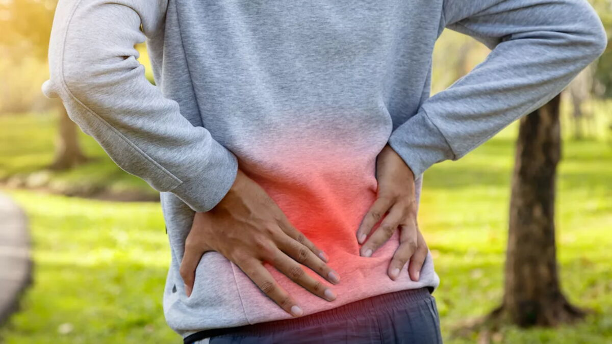

Lombalgie aiguë : faut-il vraiment rester au lit ?
Pendant longtemps, le réflexe systématique face à un lumbago ou une crise de lombalgie aiguë a été de recommander l'alitement. Aujourd'hui, les données de la littérature scientifique et les recommandations internationales s'accordent sur le constat inverse : l'alitement prolonge la durée des symptômes et retarde la récupération fonctionnelle.

Les données comparatives : Alitement vs Activité adaptée
Les essais contrôlés randomisés (RCT) comparant le maintien d'une activité tolérée à l'alitement au lit chez les patients souffrant de lombalgie aiguë mettent en évidence des bénéfices cliniques nets en faveur du mouvement (Dahm et al., Cochrane Review, 2010) :
- Intensité de la douleur et statut fonctionnel : Les patients encouragés à rester actifs présentent une réduction de la douleur à court terme (2 à 4 semaines) et une récupération de la fonction articulaire statistically supérieure au groupe mis au repos au lit (Malmivaara et al., New England Journal of Medicine).
- Reprise des activités et arrêt de travail : L'alitement au-delà de 48 heures est associé à une durée moyenne d'arrêt de travail plus longue et à une reprise plus tardive des activités quotidiennes (Hagen et al., Spine).
- Effets délétères du repos strict : L'inactivité prolongée favorise l'inhibition musculaire réflexe, la raideur tissulaire et l'installation d'un comportement d'évitement lié à la peur de la douleur (kinésiophobie).
La recommandation des autorités de santé
En France, la Haute Autorité de Santé (HAS, 2019) et la Caisse Nationale d'Assurance Maladie rappellent dans leurs recommandations de bonne pratique que le maintien ou la reprise précoce d'une activité physique adaptée constitue le pilier du traitement de la lombalgie commune.
Pour en savoir plus sur les supports d'information grand public élaborés par les autorités sanitaires, vous pouvez consulter la page dédiée de la Caisse Nationale d'Assurance Maladie (Ameli.fr) : « Mal de dos : le bon traitement, c'est le mouvement ».
Quelle conduite à tenir en pratique ?
Rester actif ne signifie pas réaliser des efforts violents lors de la phase aiguë. La stratégie consiste à :
- Éviter les périodes d'alitement prolongé en dehors du sommeil nocturne.
- Fractionner les activités et privilégier de courtes périodes de marche.
- Réaliser un bilan clinique afin d'identifier les mouvements simples permettant de réduire l'inhibition antalgique et de restaurer la mobilité.
Références scientifiques & Littérature
- Dahm KT, Brurberg KG, Jamtvedt G, Hagen KB. Advice to rest in bed versus advice to stay active for acute low-back pain and sciatica. Cochrane Database of Systematic Reviews, 2010, Issue 6. Art. No.: CD001254.
- Malmivaara A, Häkkinen U, Aro T, Heinrichs ML, Kosrennemi L, Kuosma E, et al. The treatment of acute low back pain — bed rest, exercises, or ordinary activity. New England Journal of Medicine, 1995; 332(6):351-355.
- Haute Autorité de Santé (HAS). Prise en charge du patient présentant une lombalgie commune. Recommandations de bonne pratique, 2019.
- Hagen KB, Hilde G, Jamtvedt G, Winnem M. Bed rest for acute low-back pain and sciatica. Spine (Phila Pa 1976), 2000; 25(22):2932-2939.